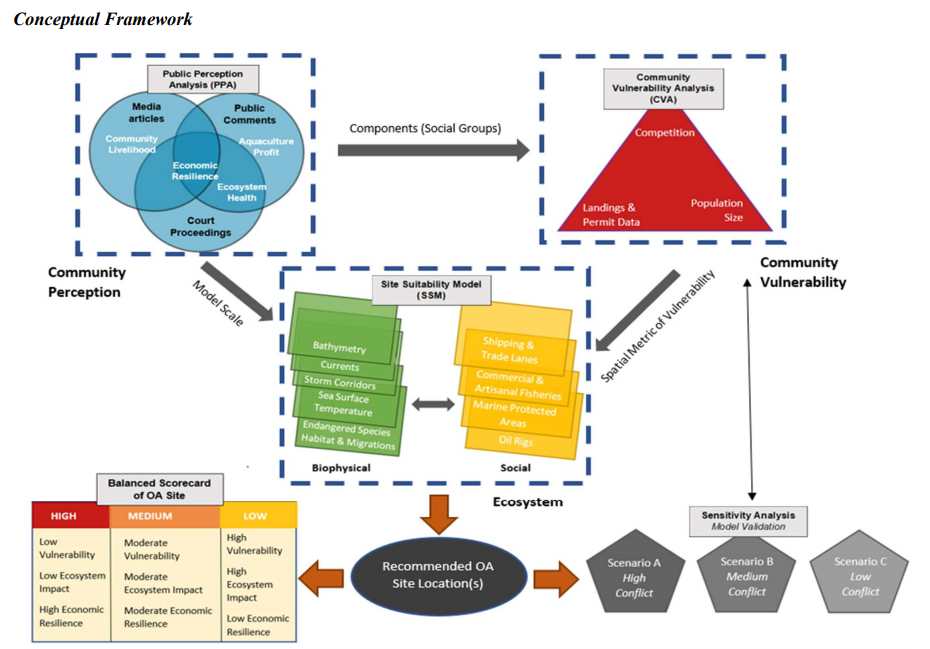
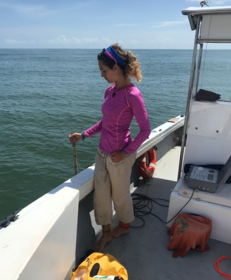
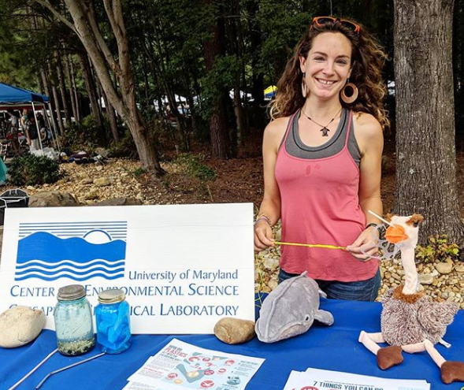
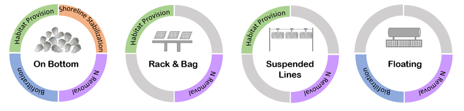

Link to project: link
I am on a team of graduate women scientists from around the U.S. that are using a dynamic framework with multidisciplinary datasets (publicly available news articles, policy documents, public comments, fish landings data, biotic and abiotic offshore spatial layers, community vulnerability metrics) to inform the siting of finfish aquaculture farms in the offshore waters in the Gulf of Mexico and the impact of these sitings on public perceptions and community vulnerability for adjacent coastal regions.
Link to Upwell Turtles website, my collaborator and funder: link


Website Link: Link
Website Link: Link
500 Women Scientists is an organization that promotes diversity, connection, and accessibility for scientists in defiance of racism and the patriarchy. I am proud to be a member of the Silver Spring Pod, where myself and a handful of other members are working to create a website for the Silver Spring Pod using GitPages that is free and easily modified for future members.
500WS Website Link: Link
I am currently a graduate representative for the MEES (Marine-Estuarine Environmental Sciences) Graduate Program at the University of Maryland, where I serve on both the Graduate Student Government (link) Local and Civic Engagement Committee and University Sustainability Council (link). With these roles, I get to represent my program constituents at the University government level, work on engaging graduate students with local and civic affairs, and assist the University in carrying out its Climate Action Plan.

This project is a collaboration at the University of Maryland Center for Environmental Science, where we created an opinion piece on the importance of ecolabeling for shellfish, which have not had the extensive labeling and thus public awareness of ecosystem services and gear tradeoffs that other marketed seafood products have. This paper is currently under review at the Journal of Aquaculture Environment Interactions.
Copyright © 2016 Skynet, Inc. All rights reserved.